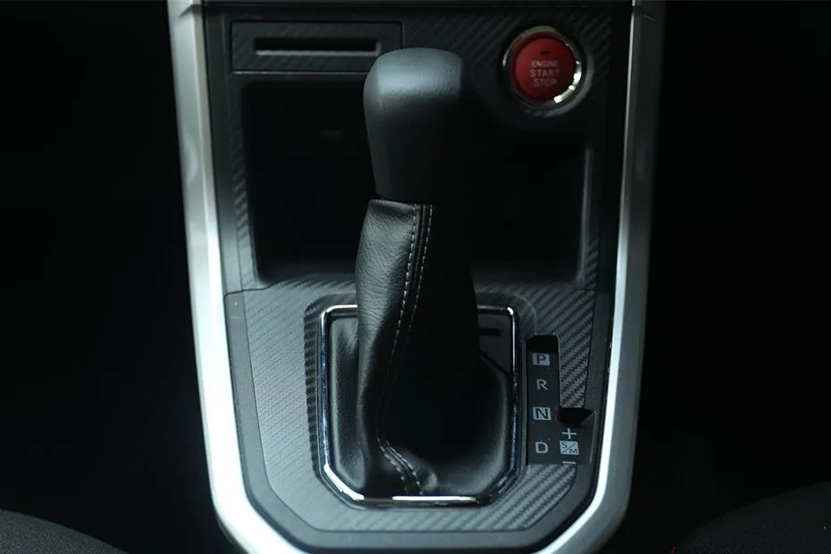
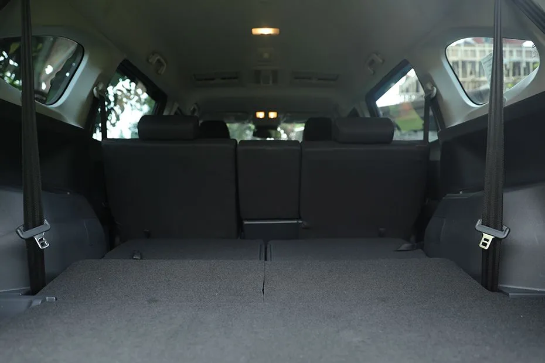
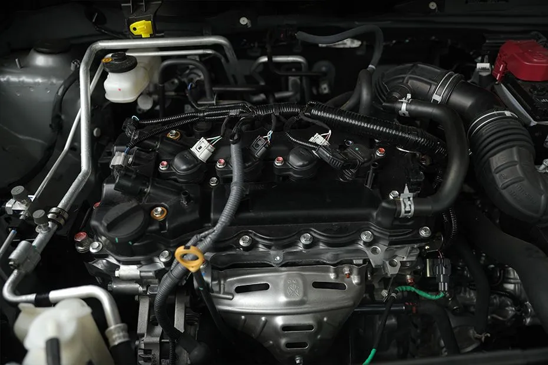

Xenia

Daihatsu Xenia New 2024 hadir untuk memberikan pengalaman berkendara yang tak tertandingi. Dengan desain modern dan fitur-fitur unggulan, Xenia siap menemani setiap momen berharga Anda dan keluarga.
- Desain Elegan dan Modern - Xenia New 2024 tampil dengan desain yang lebih dinamis dan stylish, membuat Anda bangga saat mengendarainya. Garis-garis bodi yang tegas dan aerodinamis meningkatkan kesan sporty dan modern.
- Kenyamanan dan Fitur Keselamatan - Xenia 2024 dilengkapi dengan berbagai fitur kenyamanan seperti sistem AC yang canggih, ruang kabin yang luas, dan kursi yang ergonomis. Fitur keselamatan seperti airbag, ABS, dan kontrol stabilitas memastikan keamanan Anda dan keluarga selama perjalanan.
- Varian dan Harga yang Kompetitif - Tersedia dalam berbagai varian dengan harga yang kompetitif, Xenia 2024 memberikan pilihan yang sesuai dengan kebutuhan dan budget Anda. Dengan 7 pilihan warna menarik, Anda bisa memilih Xenia yang paling sesuai dengan gaya Anda.
Spesifikasi Xenia
| Mesin | 1.3 L |
|---|---|
| Transmisi | Manual dan CVT |
| Varian | 8 |
| Harga | Rp 224,45 - 292,65 Juta |
| Dimensi | 4395 mm L x 1730 mm W x 1700 mm H |
| Warna | 7 Pilihan Warna |
| Kapasitas | 7 Kursi |
| Ground Clearance | 205 mm |
Interior





Engine
